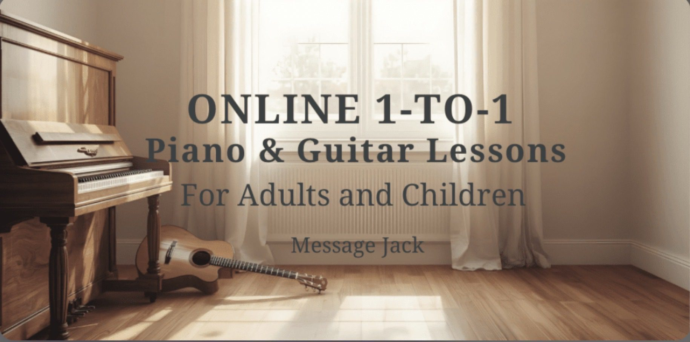

Online Piano & Guitar Lessons for Adults and Children – Music Lessons Ireland
Learn Piano or Guitar from Home with a Professional Musician Music Lessons Ireland offers fun, engaging 1-to-1 online music lessons for adults and children across Ireland . All lessons are taught live over Zoom by a professional performing musician with over 10 years of teaching experience in Irish primary schools and private tuition. Lessons are tailored to each student’s interests — whether that’s learning songs, improving confidence, building creativity, or developing a strong musical foundation. 🎹 Piano Lessons 🎸 Guitar Lessons 🎵 Beginner Musicianship 🎧 Online from anywhere in Ireland No grades or exams are required — students learn through songs, games, creativity and practical skills that make music enjoyable from the very first lesson. Lessons are suitable for: • Complete beginners • Children aged 7+ • Teenagers • Adults returning to music • Homeschool students • Students looking for a creative outlet All you need is: ✔ An instrument ✔ A device with Zoom ✔ Internet connection A free trial lesson is available for new students. Message Jack directly to check availability or ask any questions.
View on Google Maps →